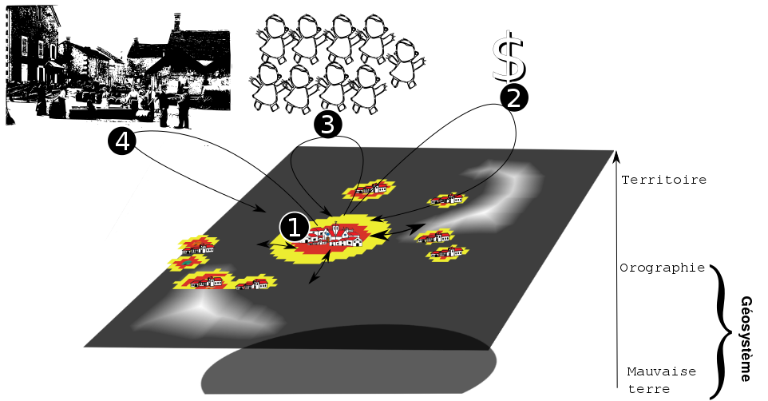

Paysage computationnel, viticulture virtuelle.
Histoire d'émergence spatiale
Par Etienne DELAY, Samuel LETURCQ et Xavier RODIER VitiTerroir / Séminaire final 14 novembre 2016/ Tours (37)
Introduction
Objet d'étude : les paysages viticoles
Comment explorer des comportements passés pour comprendre les formes paysagères actuelles?
 Le vignoble de Banyuls-sur-Mer
Le vignoble de Banyuls-sur-Mer
Etudier le basculement sur le temps long d'une viticulture de subsistance à une viticulture d'exportation. Quelles sont les conséquences de la compétition spatiale entre différents types d'agriculture et leurs réponses à différents marchés.
Une réponse : la modélisation
“un modèle est une abstraction qui simplifie le système réel étudié [...], pour se focaliser sur les aspects qui intéressent le modélisateur”
P. Coquillard et D.R.C. Hill 1997
“un modèle a pour fonction d'être un instrument de facilitation d'une médiation”
M.S. Morgan et M. Morrison 1999
Prédire ≠ Expliquer
“La théorisation [...] est liée à la possibilité de plonger le réel dans un virtuel imaginaire, doté de propriétés génératives, qui permettent de faire des prévisions”
R. Thom 2009

Posture
“Growing Artificial Societies from Bottom Up”
J.M Epstein et R. Axtell 1996
Dans cette lignée nous avons :
- travaillé sur un monde et des sociétés virtuels
- autour d'un individualisme méthodologique
- réduit le système à des interactions essentielles
Les systèmes multi-agents (SMA), définition
“Un agent est une entité physique ou virtuelle
- Capable d'agir dans un environnement
- Mue par un ensemble de tendances (sous forme d'objectifs)
- Capable de percevoir (de manière limitée) son environnement
- Dont le comportement tend à satisfaire ses objectifs”
J. Ferber 1995
crédit photo : Y tambe in wikimedia commons{kind=link}
Matériels et méthodes
Share it !
https://github.com/ElCep/victor_cybergeo
Le modèles est distribué sous licence Creative Commons By-SA sur github

En deux mots ... Principes de base
Complexification des hypothèses de Von-Thünen (1826)
- inégale fertilité du sol
- multiplicité des marchés urbains
- tension de l'infield/outfield
{kind=link}
En deux mots ... Les objets en présence
- Les localités
- La localité centrale
- Les localités satellites
- Les parcelles
- la vigne
- les céréales
- Les marchés
- sur une fonction linéaire
- sur une fonction logistique
En deux mots ... comment ça fonctionne ?
- n°1 : Extension/rétractation des parcelles pour chaque localité
- n°2 : Mise à jour du capital des localités
- n°3 : Évolution de la population des localités
- n°4 : Mise à jour du prix d'achat et de vente des productions (logistique ou linéaire) de manière généralisée à tout le système
Les simulations
Nous avons cherché à observer :
- l'effet de l'isotropie et anisotropie, et de la position initiale dans l'espace
- l'effet du nombre d'agents "village" sur le comportement du système
- l'effet d'une macro-économie basée sur une fonction linéaire et logistique
Chaque paramétrisation a été testée 30 fois avec un maximum de 300 itérations (soit 470 simulations de 300 itérations). Nous nous sommes intéressés à la surface en céréales et en vigne, à l'utilisation du sol en fonction de la culture et au nombre de villages qui perdurent dans le temps.
En deux mots ... qu'est-ce qu'on a mis derrière?
Résultats et discussions
Isotropie, anisotropie, espace de compétition
Les agents face au monde
La compétition entre les agents ne varie pas fonction des différents espaces, mais...
Isotropie, anisotropie, espace de compétition
Les parcelles face au monde
...la stratégie change, en particulier pour les céréales (graphe b)
Isotropie, anisotropie, espace de compétition
L'historicité et ses traces spactiales
historicité de certaines affectations de parcelles est vestiges d'une compétition avec des localités qui ont disparues.
Isotropie, anisotropie, espace de compétition
Discussions
- On constate une compétition similaire entre les agents à l'échelle des localités
- En changeant d'échelle, on se rend compte qu'elle ne se matérialise pas de la même manière en fonction des conditions initiales
- Les agents surmontent le déterminisme géographique ...
- ... in déterminisme socio-spatial plus marquant !
Conséquence de la macro-économie
Marché logistique VS marché linéaire
conséquence sur les parcelles

Conséquence de la macro-économie
Marché logistique VS marché linéaire
conséquence sur l'utilisation du sol
Conséquence de la macro-économie
Discussions
- Un marché linéaire :
- est plus stable sur le temps long
- permet un meilleur développement viticole
- produit un paysage relativement équilibré entre les cultures
- reflète un modèle où les territoires ont une meilleure anticipation
- Un marché logistique :
- fait la part plus belle au déterminisme local
- reflète un modèle taxé par l'extérieur
Conclusion
Des conclusions sur le modèle
- L'espace influence moins la survie des localités que la répartitions des parcelles dans l'espace
- La demande a une conséquence forte sur la structuration des paysages
Les SMA, le temps long et les SHS
Les SMA permettent :
- d'accompagner la réflexion du chercheur
- d'explorer des comportements et des configurations difficilement envisageables
- de préparer à la réception et à l'identification de comportements réels
Merci de votreattention
réalisé avec reveal.js crédit photo : Thomas Misnyovszki on Flick'rAnnexes
L'évolution de la population
La population est une valeur attributaire des agents localités, elle est recalculée à chaque itération par :
\[ n_{t+1}=n_{t}+a*n_{t}*\frac{1-n_{t}}{n_{max}} \]a est positif ou négatif en fonction de la pénurie ou de l'abondance en nourriture
retourL'évolution linéaire du marché
S'applique sur le volume total de parcelles
\[ p=\frac{(n_{tot}-n_{c})*100}{n_{tot}} \] retourL'évolution logistique du marché
S'applique que la différence entre les parcelles actuelles et celles du tour précédent
\[ p_{t+1}=p_{t}+b*p_{t}*\frac{1-p_{t}}{p_{max}} \] retour